生成时间：2026-09-30T11:38:52+08:00
今日保留论文数：14
内容构成：今日新文 14 篇；补充推荐 1 篇；经典旧文精读 0 篇
阅读分层：重点精读 1 篇；相关简报 14 篇。精读依据科学贡献筛选，简报保留方法、结论及局限。
补充推荐论文数：1
高能天体物理重点
1. Assessing the detectability and identification of pulsar halos with H.E.S.S. and CTAO
- 来源：arXiv / astro-ph.HE
- 链接：https://arxiv.org/abs/2609.36229
- 作者：Karim Sabri, Yves Gallant, Justine Devin
- 公告 / 来源日期：2026-09-30
- 阅读层级：重点精读
- 评分：novelty 8/10，importance 8/10，relevance 10/10，final 9.70/10
- 推荐理由：物理扩散模板与高斯模型直接比较HESS和CTAO可辨识性并量化弥散失配偏差，强相关且有具体推进
中文题目：H.E.S.S.与CTAO能否辨认脉冲星晕：联合拟合扩散、冷却和自行
做了什么：脉冲星周围出现延展TeV辐射，并不足以确认逃逸电子形成了晕：普通高斯亮斑也能拟合，银河弥散背景还可能产生相似结构。作者把连续注入、冷却、各向同性扩散和横向运动合成为能量依赖空间模板，用Gammapy同时拟合模拟计数的能谱与形态。对象是假想的3 kpc脉冲星，覆盖144组参数；每组、每台阵列各作160次泊松实现，曝光约42小时。
在此设定内，H.E.S.S.对较老、硬注入谱、较慢扩散的晕已有辨识能力，CTAO南站14台中型望远镜在大部分网格上更偏好物理模板。检出与辨识趋势却不同：高速自行摊低表面亮度，却让拖尾更难由高斯解释。错误的银河弥散模板会系统性偏移晕参数。这是响应模拟，并非新发现了真实脉冲星晕。
为什么重要：本文把能看到源与能辨认输运机制分开，显示源表中的高斯尺度会混合年龄、扩散、冷却和运动。物理模板有机会提取更有解释力的参数，但前提是环境和输运假设成立。结果支持重新审视低表面亮度延展源，同时表明更多光子并不能自行消除背景失配。
理论 / 观测 / 仪器方法价值：值得借鉴的是离网格注入验证：模拟参数不落在拟合模板节点上，因而真正测试了插值。作者再把正确弥散模板与故意替换的CO加HI模板分开，追踪背景错误怎样传递到输运参数。应用需要响应、计数立方、背景模型，以及连续注入和冷却的粒子输运计算。
为什么应该关注：对IACT和LACT类分析，应保留联合能谱形态信息，把运动造成的拖尾与两个经验高斯成分联系起来。下一步针对真实源的距离、环境和响应重做注入回收，检查晕、PWN残余及邻源能否区分；本文42小时和3 kpc的数字不能直接当作其他阵列的灵敏度。
展开详细解读：文章讲解、背景、理论、重点章节、图表与相关工作
文章详细讲解
科学问题。 逃逸电子、正电子通过逆康普顿散射形成比X射线脉冲星风云大得多的辐射区，但延展本身不能证明粒子已经进入星际介质。本文问的是：能量依赖形态是否足够独特，可以胜过经验高斯，并反推出输运？两个高斯分别呈软、硬谱也未必意味着两个加速器，同一脉冲星在不同时期的注入就可能产生这样的分解。
作者怎么做。 固定代表性距离、现今周期、磁场和光场，改变出生周期、自行、扩散与注入谱，计算连续注入粒子的空间能谱，再投影为逆康普顿强度。强度与点扩散、有效面积和能量弥散卷积，生成带背景的计数。经验模型也允许逐步增加第二个高斯、椭率与谱曲率，因而不是故意只用最差的单高斯作对照。
关键结果。 老系统积累较低能遗迹电子，产生广而软的成分；新注入电子留在当前位置附近，产生紧而硬的成分。慢扩散提高表面亮度，通常同时改善检出和辨识。自行则使检出变难、形态更有特点。CTAO多数网格更偏好晕模型，但年轻软谱情形仍可能近似高斯。这验证了同族模型下的参数推断能力，不构成各向同性扩散的观测确认。
局限和下一步。 均匀磁场、单区扩散和出生即逃逸未覆盖真实PWN到晕的演化；非零自行时注入指数固定，并非所有参数一起自由拟合。未收敛实现被剔除，背景试验还舍弃大量贴边的组合，因此不能从成功拟合分布推出无条件完备率。实际应用应改变距离、环境、邻源和背景，比较分区或各向异性输运，并校准扫描引入的选择效应。
关键结果是怎么做出来的
首先锁定假想源的供能与年龄。距离3 kpc、现今周期80 ms、特征年龄100 kyr对应自转损失功率约9.8×10^35 erg/s；出生周期30或70 ms分别被标为约85和25 kyr。它们由固定制动律换算，不是独立测年。100 TeV处扩散系数从10^26到10^28 cm²/s取六点，横向速度为0、300和950 km/s，最后一种罕见，主要用于覆盖边界。
其次把源放进仪器响应。H.E.S.S.公开测试数据中MSH 15−52方向的8.4小时响应复制五遍，得到约42小时；这是旧CT1至CT4响应，并不代表最新重建。计数立方4°×4°、像素0.02°、重建能段0.3–100 TeV。CTAO采用Prod5 v0.1南站14台MST、40°天顶角响应；响应文件的50小时优化标签不等于模拟曝光。
然后检查模板插值。生成数据使用不同于预计算节点的物理参数；效率作线性归一化，自行方向通过旋转处理。附录B的恢复分布检验了离网格拟合，但仍是在固定环境、同族生成模型和收敛子集上的检验，不能证明面对真实模型错误也稳健。
图8、9把辨识能力放到参数空间中。H.E.S.S.的最快扩散设定表面亮度过低，年轻软谱也较难检出；老年慢扩散更容易分成两个高斯。最佳经验模型与晕模型的AIC差大于10是作者选定的经验门槛，不是已校准的几sigma发现概率。CTAO偏好物理模板的网格更多，却没有排除不在候选集内的物理机制。
最后加入气体相关伽马背景。作者从两个方向的Planck尘埃图生成弥散模型，再用原图或CO加HI图拟合。正确模型也会让源相关统计量降低约30%–90%，错误模型则使晕参数吸收空间残差，甚至改变推断的运动方向。图13画的是跨实现中位数和四分位范围，不能当成单次观测的68%参数置信区间。
展开背景、理论、公式、模型和章节导读
背景知识
脉冲星把自转能经磁化风输送到周围，粒子在终止激波或磁重联等过程中加速，在磁场中同步辐射并散射背景光。PWN是受风的动力学和磁场约束的结构，晕通常指逃逸粒子在更大环境中的辐射。两者可共存，单靠角尺度无法确定分类，还需要能谱、形态和环境信息。
Geminga和Monogem是经典参照：空气簇射阵列看到的大范围TeV辐射，在各向同性解释中要求较低的局域扩散率。“低”要有能量口径，本文在100 TeV报告D0，而银河B/C约束常从较低能量外推。不同参考能量、湍流谱或输运几何的数值，不能未经换算直接比较。
电子冷却使空间图包含历史信息。高能电子寿命短，主要记录近期注入，较低能粒子则保留过去的供能和运动轨迹。因此高能图往往更紧凑，低能图可能有拖尾。但同一种形态变化可以混合冷却、扩散和注入历史，单能段尺寸无法唯一解出这些量。
IACT角分辨率较好，但对极大尺度、低表面亮度结构，视场和背景成为瓶颈。将近邻晕放远，角尺度变小而通量也下降，所以本文选了比Geminga更强的假想脉冲星。银河平面上气体相关伽马、未分辨天体及残余强子事件都参与计数，它们并不是一个平滑常数背景就能全部描述。
基础理论 / 方法脉络
粒子数连续性连接三个过程：注入增加粒子，扩散重新分配位置，损失把高能粒子移向低能。均匀各向同性介质使单次注入的格林函数呈高斯形，但连续注入是不同宽度、不同中心的核叠加。因此扩散核是高斯，并不意味着整张伽马图能由能量无关的单高斯描述。
注入功率取自自转损失的一部分。固定当前周期及制动律时，出生周期越短，早期可释放旋转能越多，真实年龄也越大，两者共同增强遗迹成分。效率、年龄和谱因此退化。总积分谱几乎不敏感于扩散和自行；加入不同能段的角分布，才可能解除部分退化。
损失包含同步辐射与逆康普顿散射。本文磁场固定3微高斯，靶光包括CMB及表1的光学、近红外、远红外组分，高能区需考虑Klein–Nishina抑制。冷却极限排除过早注入的贡献；图2的Eχ定义为电子能量，不能直接视作同数值伽马能量上的严格谱断点。
统计模型还要经过响应折叠。真实能量强度乘有效面积和曝光，并经过能量弥散与点扩散，才可与重建计数比较。源检出、添加高斯成分、比较输运模型是不同检验。晕和双高斯不是嵌套模型，不能简单套Wilks换算；AIC是在给定候选集合下权衡拟合与参数数量。
公式与推导
这里以正损失率 $b(E)=-dE/dt>0$ 统一符号。原文式1的损失项与附录负冷却率记号存在歧义，以下按标准守恒式改写。$N$为每体积每能量的粒子数，$Q$为每时间每能量注入率：
每项均有粒子数每体积每能量每时间的量纲。空间项搬运粒子，能量项描述流向低能。本文固定Kolmogorov能量依赖；式2的纯偶极制动特例同时给出年龄：
$P/(2\dot P)=100$ kyr、$P=80$ ms时，30和70 ms分别得85.94与23.44 kyr，论文约称85与25 kyr，不能把这些约数当额外独立测量。出生周期也决定供能历史，式3–5可以连写为：
分母保证注入能量积分为$\eta L$，计算时能量单位须一致。注入参考$E_0=1$ TeV与扩散参考100 TeV不同。改变谱或截断会把供能移进或移出有效观测区，故相同效率不等于相同计数。由损失律积分，得到附录A式10–11的正损失率形式：
第一式反求注入能量；超过最大冷却时间的注入时刻不能贡献。第二式量纲为长度平方，连接传播与冷却。教学极限$b=b_0E^2$下，冷却时间约为$1/(b_0E)$；若再近似D不变，则扩散尺度为平方根时间规律。这只帮助解释趋势，不替代本文完整损失计算。
式13对应上述连续注入解，积分只覆盖存在冷却解的时刻。损失率之比是能量区间变换的雅可比；核中心$\mathbf r_s(t')=-\mathbf V_\perp(t-t')$以当前源位置为原点。核宽由扩散决定，中心序列由自行决定，二者共同产生拖尾。把附录投影及Naima计算压缩为教学表达：
$P_{\rm IC}$定义为单粒子每时间每伽马能量的光子产生率，采用各向同性辐射。强度因此是每面积每时间每能量每立体角的光子数。它还不是观测计数，需让含有效面积和重建响应的$R_i$把它映射到箱$i$：
这是标准泊松前向拟合的教学写法，不是作者额外报告的新检验。$B_i$为背景期望，$n_i$为模拟计数。背景空间形状错误时，仅调归一化无法使所有箱一致，晕参数会补偿残差。最终按原文的明确AIC约定比较：
$G$为高斯模型，$H$为晕模型，正值偏好晕；$k$为自由参数数。这把整条物理链变成模型比较，却不给出全局发现概率。原文把TS定义成$-2\ln\mathcal L$，后文部分“越高越显著”用法及对数抛物线谱判据的差值方向与之不一致；本解读不自行把其TS绝对值换成显著性。
模型拟合 / 应用方法
输入是能量依赖空间模板和逐次指向响应，而不是先抽取的一维谱。作者把模板分成归一化空间分布及积分能谱，在物理参数网格插值，再由Gammapy拟合三维计数；背景另有自由谱调整。这保留角度与能量关联，也避免把PSF展宽误认为扩散。
静止源拟合D0、出生周期、效率和注入指数；移动源改为速度及方向，注入指数固定。距离、磁场、光场和制动指数等仍等于模拟真值。因此多个参数可以同时约束，但所有环境量并未共同识别，出生周期反推的年龄也始终依赖制动律。
经验对照按预设门槛增加第二个高斯、椭率及谱曲率，选择过程会改变复杂度和统计分布。AIC应对应最终模型。本次没有运行作者代码校准尾概率，尤其不能把成分和谱形扫描后的标称局部阈值写成全天全局显著性。
离网格模拟验证插值，附录B只统计收敛实现；背景试验每种受限组合做50次实现。用正确模板主要损失精度，用CO加HI替代尘埃会让结构残差进入晕参数。附录C用中位数与四分位数描述非高斯分布，并舍弃大量参数贴边情形，不能称为涵盖全部失败情况。
真实数据可沿这两层验证，再改变源距、光场、背景空间误差和邻源组成。这是核读者提出的后续路线，本文尚未实施。应特别检查紧硬成分与软遗迹成分在替换背景后是否稳定，只有稳定的联合形态信息才适合转译为输运参数。
重点章节 / 结果段落怎么读
-
第2节及表1、2。 先分清固定环境与扫描变量，记住3 kpc、单区均匀扩散和强脉冲星的范围，年龄与出生周期并不独立。
-
附录A。 从冷却反求注入能量，再推扩散核和移动中心；统一损失率符号，理解为什么总图不等于单高斯。
-
第3节与附录B。 找出离网格验证、固定注入指数及剔除未收敛实现的条件，分清数值恢复与物理模型正确性。
-
第5节图8、9。 在相同年龄、谱和扩散条件下比较两台仪器，检出更容易与拖尾更独特可以相反变化。
-
第6节和附录C。 从尘埃与气体图空间差异追到参数偏移，理解提高统计量为何不能自动消除背景系统误差。
关键图表与解读
图8
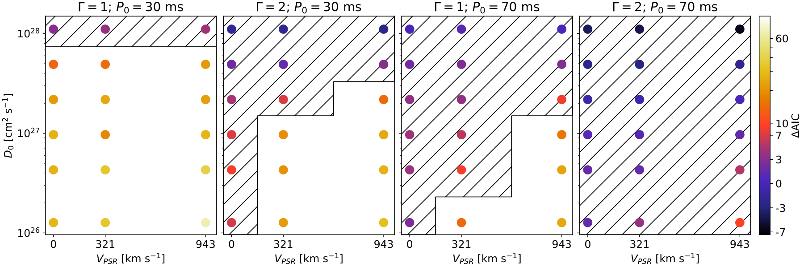
图注：采用H.E.S.S.仪器响应、约42小时观测时，不同模拟参数组合中最佳高斯模型与晕模型之间的AIC差在全部实现上的平均值。若达到文中检出判据，高斯模型可包含两个分量及弯曲能谱。斜线区域表示AIC差小于10。
怎么看这张图：先看同一年龄与注入谱下扩散系数、速度变化，再比较斜线区域。正值偏好物理晕，但阈值10是作者约定，不是发现显著性；平均数也会掩盖实现间分散。
来源与置信度：arXiv HTML；source verified；https://arxiv.org/html/2609.36229v1/HESS_dAIC_Ec100TeV.png
图9
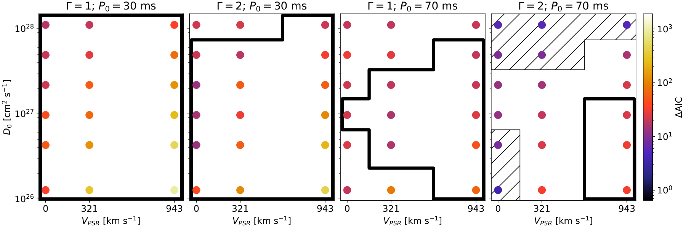
图注：与图8相同的模型比较，改用CTAO南站中型望远镜阵列的仪器响应。黑色等高线标出超过50%模拟实现需要第二个高斯分量的参数区域；其他图例和斜线阈值同图8。
怎么看这张图：与图8逐格对照可以看到，更容易分辨结构不等于一定能唯一识别晕。此处仅为指定MST配置和42小时条件，不能替代完整CTAO阵列预测。
来源与置信度：arXiv HTML；source verified；https://arxiv.org/html/2609.36229v1/CTAO_dAIC_Ec100TeV.png
图13
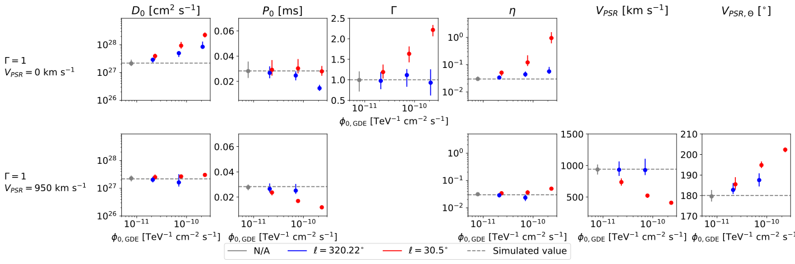
图注：注入基于尘埃图的银河弥散辐射，拟合时改用CO+HI模板，展示三种弥散谱振幅下的晕参数重建。每行是不同参数组合，效率均为3%；每列对应一个拟合参数。水平虚线为注入真值，点为各实现的中位估计，误差棒为第一至第三四分位。灰色为既未注入也未拟合弥散辐射；蓝、红分别为银河经度320.3度和30.5度的尘埃模板。
怎么看这张图：比较点与虚线的偏离，而非只看误差棒大小。模板失配能使统计很好的拟合偏离真值；四分位距描述模拟分散，并不是单次测量的置信区间，失败拟合还被排除。
来源与置信度：arXiv HTML；source verified；https://arxiv.org/html/2609.36229v1/HESS_GDE_param_recovery_COHI_gamma1.svg
强相关工作
本文引言及表2衔接Albert等2024年Geminga和Monogem的HAWC测量，以其实测扩散、注入谱及效率作为参照。新增加的是IACT响应下年龄、自行与经验形态辨识试验，不能把假想源结果称为对那两个天体的重新测量。关系依据本文引言及参考文献，本次未独立复现前作；可用“Geminga Monogem diffusion template HAWC”继续检索。
Eckner等2023年的CTAO晕预报是直接同类工作。本文第4.2节说明磁场6而非3微高斯、注入指数2.4而非1可大幅改变给定功率的计数；按相同源设定复算得到约4.2sigma，与前作5sigma接近。这个对照说明先对齐环境和谱假设，才能讨论响应增益，不能从不同假设的阈值推出普适提升倍数。
同一事件 / 同类源线索：
（未提供）
相似工作：
（未提供）
基础理论 / 方法工作：
（未提供）
相反观点 / 张力线索：
（未提供）
相关简报
1. Combined constraints on the diffuse flux of cosmic neutrinos between 10^16 eV and 10^26 eV
- 来源：arXiv / astro-ph.HE
- 链接：https://arxiv.org/abs/2609.36632
- 作者：S.V. Troitsky
- 公告 / 来源日期：2026-09-30
- 阅读层级：相关简报
- 评分：novelty 7/10，importance 7/10，relevance 10/10，final 9.05/10
- 推荐理由：统一十个数量级中微子曝光与统计约定，跨实验比较价值高，独立性和重叠处理必须核查
中文题目：跨十个数量级统一弥散中微子上限：保留实验身份与统计约定
问题、方法与结论：作者重建光学切伦科夫、空气簇射、冰层射电及月面搜索的曝光，统一为地球处味比1∶1∶1的总全味中微子加反中微子通量，以逐通道泊松似然求90%单侧上限。10^16–10^17 eV窗口的最强限约6.1×10⁻⁹ GeV cm⁻² s⁻¹ sr⁻¹，采用窗口内E⁻¹测试谱。ANITA-IV四个近地平线事件不进主组合，全部按候选保留时部分上限可放宽至约2.5倍。
意义与贡献：价值在于把不同实验的味数、曝光和统计口径整理成可复用约束，而非直接取各条发表曲线的下包络。保留事件来自哪个实验，比只加总计数更有信息；论文还明确不把设计灵敏度混入已完成观测。
可借鉴之处：评估指定理论谱时应与每个通道曝光积分，再检验谱归一化，不能只看曲线是否穿越某点。一个通道仅在曝光覆盖整段测试能窗时参与准微分上限，未知高能响应不能当成零接受度或随意外推。
局限与关注点：相邻点的十倍能窗重叠，因而强相关；背景被固定，未统一边缘化跨实验系统误差，也没有事件级能量和方向似然。已使用部分相同中微子数据拟合的宇宙成因基准只能做相容性诊断。缺方向响应，本文没有给银河超重暗物质寿命的数值约束。
图2
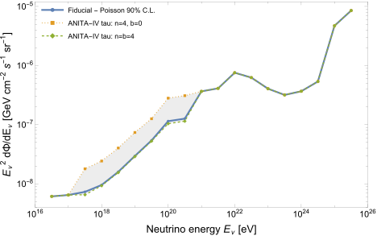
图注：各向同性全味弥散中微子通量在十倍能量窗口内的联合90%置信上限。实线是逐通道泊松似然乘积得到的基准上限。阴影表示把ANITA-IV四个近地平线事件作为一个计数为4、背景从0至4变化的通道时所得上限包络。
怎么看这张图：先确认全味、能窗与置信约定。阴影是事件处理选择，不是统一的仪器系统误差带；相邻能窗重叠，不能当作独立上限点再相乘。
来源与置信度：arXiv HTML；source verified；https://arxiv.org/html/2609.36632v1/combined-limit.svg
2. Very High-Energy GRB Afterglow Fits with Neural-Network Emulation and Bayesian inference
- 来源：arXiv / astro-ph.HE
- 链接：https://arxiv.org/abs/2609.38100
- 作者：Edilberto Aguilar-Ruiz, Jessica Saldívar Talavera, Ramandeep Gill, Sundar Srinivasan
- 公告 / 来源日期：2026-09-30
- 阅读层级：相关简报
- 评分：novelty 7/10，importance 7/10，relevance 10/10，final 9.05/10
- 推荐理由：时间依赖SSC代理支持VHE余辉贝叶斯推断并揭示均匀环境失配，需核对误差与先验覆盖；全文发现约27%离网格谱误差超过10%，下调重要性，不采纳全域约2%精度承诺
中文题目：用神经网络加速TeV余辉拟合：离网格误差暴露适用边界
问题、方法与结论：作者以100800个均匀介质、球形薄壳的同步自康普顿数值谱训练形状与归一化两个网络，再拟合GRB 190114C三个早期历元。表3给出动能约7.24×10^54 erg、密度约0.12 cm⁻³、电子指数2.31，约千秒后光变却明显失配。尤其全文离网格测试显示，约27%的测试谱中位相对误差超过10%，几乎都集中在电子指数2.01至2.18；不能把摘要的约2%误差泛化到连续参数域。
意义与贡献：贡献是让昂贵的粒子—光子动力学模型可进入多历元贝叶斯推断，并公开一个真实的代理失效区。当前GRB拟合的指数位于较可靠区，但这只是条件适用，未证明整个训练域都能用于精密反演。
可借鉴之处：可借鉴“网格内留出、全域离网格、边界定向采样”三层验证，并将代理误差加入观测方差。论文误差项取自网格内97.5分位，面对离网格失效区仍需另做校准；只给总体中位误差会掩盖局部严重偏差。
局限与关注点：电子加速比例固定为1，环境密度指数固定0，初始洛伦兹因子后验靠近600上界。晚期失配提示环境或模型需扩展，本文没有自由拟合分层密度来证明唯一解释。正文与结论对X射线冷却段的描述也不同，不据此给出唯一闭合关系判定。
图2
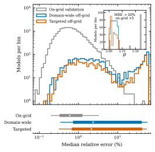
图注：网格内验证、全参数域离网格及定向离网格样本的中位相对误差分布。上图为各误差区间内的模型数；下图圆点为中位数，粗、细线分别为中央68%及95%范围。内嵌图显示误差超过10%的模型的电子指数p分布；网格内计数为便于观察放大五倍。
怎么看这张图：重点看离网格分布的长尾与内嵌图的硬电子谱区域。少数汇总精度指标不能保证后验探索路径上的代理模型可靠。
来源与置信度：arXiv HTML；source verified；https://arxiv.org/html/2609.38100v1/MRE_distribution.svg
3. Search for dark matter annihilation in the Sun using the full ANTARES dataset
- 来源：arXiv / astro-ph.HE
- 链接：https://arxiv.org/abs/2609.37422
- 作者：A. Albert, S. Alves, M. André, M. Ardid, S. Ardid, J.-J. Aubert, J. Aublin, B. Baret
- 公告 / 来源日期：2026-09-30
- 阅读层级：相关简报
- 评分：novelty 6/10，importance 7/10，relevance 10/10，final 8.75/10
- 推荐理由：ANTARES全数据太阳暗物质上限提高2至3倍，最终数据集与中微子方法值得简报而非突破精读
中文题目：ANTARES全运行期太阳暗物质搜索：未见超额，上限改善2至3倍
问题、方法与结论：研究使用2007–2022年ANTARES数据，质量筛选后有效曝光4551天，搜索太阳方向的上行径迹。三种重建策略分别照顾低、中、高能事件；通过打乱事件时间估计背景，先固定选择再开盲。35 GeV至10 TeV质量范围内没有显著超额，给出b夸克、tau轻子及W玻色子三种纯湮灭通道的90%中微子通量与散射截面上限，相比旧ANTARES结果改善约2–3倍。
意义与贡献：这是完整数据集与低能重建改进带来的最终约束，特别补充自旋相关WIMP—质子相互作用搜索。它不是发现太阳暗物质，也不能由多个质量点都无超额推导一个不依赖粒子模型的普适排除。
可借鉴之处：移动源可用时间打乱构造背景，并用至少一万次伪实验优化质量参数和信号上限。多种重建结果按预先确定的灵敏度选取，避免对同一事件重复计数；方向、角误差和击中数共同提供区分力。
局限与关注点：通量转截面依赖太阳捕获—湮灭平衡、局域暗物质密度0.3 GeV/cm³及每通道100%分支比。文中估计综合系统不确定性约20%；与其他实验比较还受WimpSim和含电弱效应的不同产额工具影响，不能仅用曲线高低评价探测器本身。
图5.2
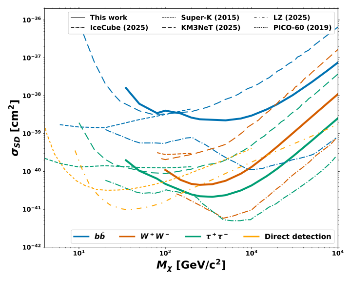
图注：自旋相关WIMP—核子散射截面的90%置信上限随WIMP质量的变化。蓝、绿、红分别为b夸克对、tau轻子对及W玻色子对湮灭通道。图中同时给出IceCube、Super-Kamiokande、KM3NeT、PICO-60与LUX-ZEPLIN的相应90%上限作比较。
怎么看这张图：读不同末态对太阳中微子搜索的影响，并记住捕获—湮灭平衡和纯末态假设。直接探测与中微子限制之间的高低也包含产额和天体环境约定。
来源与置信度：arXiv HTML；source verified；https://arxiv.org/html/2609.37422v1/CS_SD_comparison.svg
4. Constraining dark matter using 20-year INTEGRAL/IBIS observations II: Sub-GeV dark matter
- 来源：arXiv / astro-ph.HE
- 链接：https://arxiv.org/abs/2609.35968
- 作者：Jordan Koechler, Pedro De la Torre Luque
- 公告 / 来源日期：2026-09-30
- 阅读层级：相关简报
- 评分：novelty 7/10，importance 8/10，relevance 8/10，final 8.70/10
- 推荐理由：20年IBIS形态谱联合约束轻暗物质，较既有限制提高最高两个数量级但依赖背景传播
中文题目：INTEGRAL二十年银河硬X射线数据：亚GeV暗物质限制受传播模型主导
问题、方法与结论：作者整理2003–2024年IBIS数据，扣除点源和仪器背景，以银河经度分布约束亚GeV暗物质湮灭或衰变产生的直接辐射及次级电子逆康普顿辐射。126个空间—能量数据点同时拟合宇宙线逆康普顿背景与未分辨白矮星种群。相较旧分析，部分质量区间限制最多改善约两个数量级，但强度明显依赖传播和天体背景假设。
意义与贡献：贡献是把更长曝光、银河形态信息和低能电子传播一起纳入硬X射线暗物质检验。拟合偏好的额外中心电子注入并非暗物质发现，未充分描述的天体源同样可能贡献该残差。
可借鉴之处：可借鉴多空间窗口联合拟合，以及给背景振幅设置自由、带先验和固定三种对照。作者按观测轨道做聚类自助抽样估计协方差，提醒长时段累积数据不能仅以独立计数误差描述。
局限与关注点：基准拟合实际忽略协方差，只在系统误差测试中加入；正文图注与附录对其改善或削弱限制的方向表述不同，不据此作单向结论。再加速速度从0变至40 km/s可使限制改变约三个数量级，超过许多其他系统项；贝叶斯95%分位与轮廓似然阈值对应的上限也须分别标注。
图11
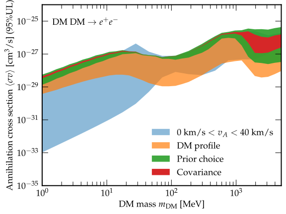
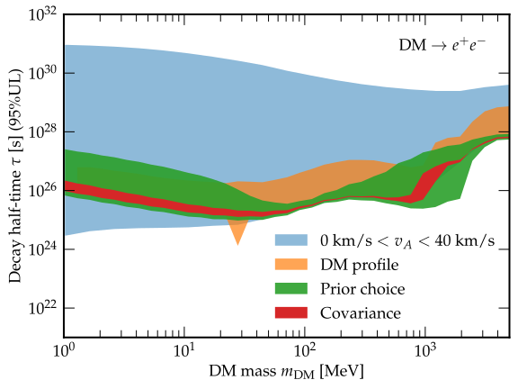
图注：暗物质湮灭为电子正电子对（左）及衰变（右）的基准限制系统不确定性带。蓝色是宇宙线传播的阿尔芬速度从0至40 km/s变化；橙色是从等温晕到内斜率1.5的广义NFW密度分布；绿色表示不同先验方案；红色表示协方差处理。
怎么看这张图：比较各带的跨度，传播模型是最突出的限制来源。它们是分别改变假设得到的范围，并非已联合边缘化的总置信区间。
来源与置信度：arXiv HTML；source verified；https://arxiv.org/html/2609.35968v1/limit_DM_ann_unc.svg；https://arxiv.org/html/2609.35968v1/limit_DM_dec_unc.svg
5. An Off-Nuclear Tidal Disruption Event Discovered At Late Times: The Case Of TDE 2023mfm
- 来源：arXiv / astro-ph.HE
- 链接：https://arxiv.org/abs/2609.35998
- 作者：Itai Sfaradi, Ryan Chornock, Yuhan Yao, Erica Hammerstein, Jean Somalwar, Raffaella Margutti, Huei Sears, Robert Stein
- 公告 / 来源日期：2026-09-30
- 阅读层级：相关简报
- 评分：novelty 7/10，importance 8/10，relevance 8/10，final 8.70/10
- 推荐理由：离核TDE位置与晚期射电提供游走黑洞证据，宿主子结构及延迟外流仍不确定
中文题目：离核潮汐瓦解AT2023mfm：定位与迟到射电揭示游荡黑洞候选
问题、方法与结论：HST把AT2023mfm定位在宿主核外0.66±0.02角秒，即投影距离1.08±0.04 kpc；热光学辐射、宽氢线和演化共同支持潮汐瓦解解释。紫外平台、光学峰值和光变模型给出的黑洞质量分别落在约百万至千万太阳质量范围。VLA在事发约991天首次检出瞬变位置的射电源，此前60和331天未检出，支持离核黑洞及延迟射电活动的研究。
意义与贡献：这提供了利用恒星被瓦解来识别非核黑洞的观测实例。关键证据是高分辨率位置与瞬变性质的结合；黑洞起源于被剥离卫星星系或其他动力学过程，仍需宿主环境和运动信息判断。
可借鉴之处：可借鉴将HST瞬变与星系结构分别拟合，再把后续射电高分辨率定位叠到同一坐标系。多个质量估计应并列保留各自假设；不能把其中最窄的条件误差当成跨模型精度。
局限与关注点：Chandra只有11个计数，位置误差不能可靠区分星系核和瞬变，等先验定位比较仅给约61%与39%的相对支持。论文的X射线上限还涉及检出阈值和90%检出概率的灵敏度定义。迟到射电不等于晚时才发射外流；早期离轴喷流等解释尚未排除，需VLBI及后续光谱约束。
图4
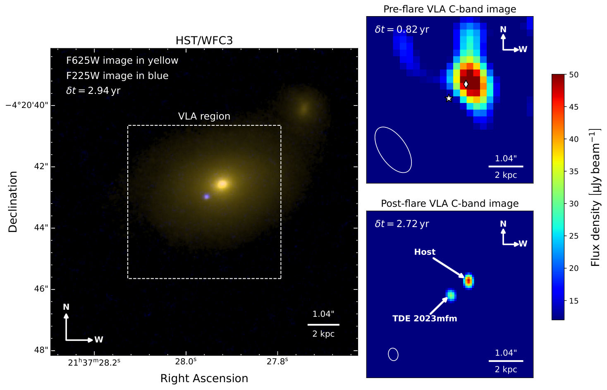
图注：AT2023mfm视场的光学、紫外与射电图像。左：HST/WFC3的F225W和F625W分别显示为蓝、黄；右上为射电增亮前的VLA B构型6 GHz图，右下为增亮后的A构型图。菱形与星形分别标出HST F625W确定的宿主核和瞬变位置。两射电图通量标尺相同，左下白椭圆所示波束不同；核区辐射大致稳定，而瞬变处出现离核射电源。
怎么看这张图：首先核对标记位置，再看不同构型的波束，不能把分辨率差异当成源结构演化。离核定位强于关于其形成历史的推断。
来源与置信度：arXiv HTML；source verified；https://arxiv.org/html/2609.35998v1/compilation_images_HST_VLA.png
6. Discovery of the Infrared Counterpart of the Rapid Burster with JWST
- 来源：arXiv / astro-ph.HE
- 链接：https://arxiv.org/abs/2609.35956
- 作者：Malina M. Desai, Kevin B. Burdge, Cristina Pallanca, Saul Rappaport, Francesco R. Ferraro, Barbara Lanzoni, Mason Ng, Paul Draghis
- 公告 / 来源日期：2026-09-30
- 阅读层级：相关简报
- 评分：novelty 8/10，importance 7/10，relevance 8/10，final 8.65/10
- 推荐理由：首次定位Rapid Burster红外对应体，分钟变源打破长期识别困难，供体与吸积机制仍待测
中文题目：JWST分离快速暴源红外对应体：拥挤场中的变亮与供体约束
问题、方法与结论：2025年4月的JWST观测将快速暴源与相距约42毫角秒的红巨星作双PSF分解，辨认出与X射线、射电位置相容且明显变化的近红外源。约12.9小时总观测中，F200W亮度下降约2.5星等，并在约4小时内出现六次强增亮。因常规读出饱和，该对象采用零帧，每帧曝光约10.37秒而采样间隔约225.5秒；不能沿用同巡天对其他恒星的21秒采样能力。
意义与贡献：结果为长期受拥挤和错误对应体干扰的特殊中子星吸积源提供了更可信的近红外识别。位置一致性、邻星稳定性与自身变化共同支持判断，早期提出的另一颗候选更可能是接触双星。
可借鉴之处：可借鉴饱和观测的零帧恢复，以及用邻星恒定性与残差检验双源解混。两颗星间距小于点扩散函数宽度，必须把分离参数与亮度串扰的系统项单列；只展示合成图会低估识别难度。
局限与关注点：缺少同时、高时间分辨率X射线观测，当前红外增亮不能被确定为I型或II型暴。F356W未能可靠解混，供体颜色仍未知；最暗F200W状态给出的供体半径界限依赖黑体温度。42毫角秒邻星对应约360 AU投影距离，也不支持把它直接视为吸积供体。
图4
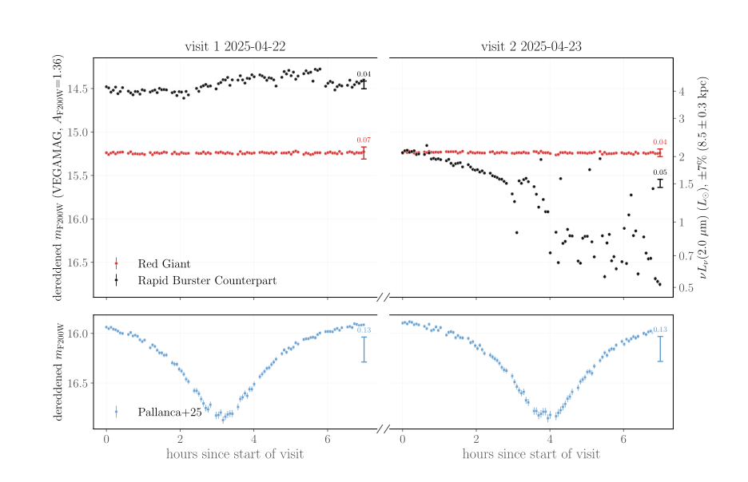
图注：上图是红巨星（红色）和快速暴源红外对应体（黑色）的光变；下图是文献此前提出候选体的光变。所有点展示帧间相对误差，每个源还按每次观测展示系统误差棒。
怎么看这张图：黑色源的变化与红巨星不同，支持双PSF分离的识别。但采样间隔约225.5秒，不能从这些点唯一判定短于采样间隔的X射线暴类型。
来源与置信度：arXiv HTML；source verified；https://arxiv.org/html/2609.35956v1/f200w_vegamag_lcs.svg
7. Fast Radio Bursts from Induced Upscattering. I. Magnetar Polar Fireballs
- 来源：arXiv / astro-ph.HE
- 链接：https://arxiv.org/abs/2609.36114
- 作者：Rei Nishiura, Kunihito Ioka, Bing Zhang
- 公告 / 来源日期：2026-09-30
- 阅读层级：相关简报
- 评分：novelty 8/10，importance 7/10，relevance 8/10，final 8.65/10
- 推荐理由：磁星诱导上散射给出FRB亮度带宽可检验联系，饱和及种子波假设尚未观测验证
中文题目：磁星诱导康普顿上散射模型：亮FRB需要额外电子对与加热
问题、方法与结论：论文构建磁极电子对火球通道：X射线先加速外流，侧向或逆向入射的低频磁流体波再经诱导散射与相对论频移进入GHz波段。非线性饱和把射电光度联系到外流动能光度和共动温度；普通冻结后电子对密度不足以产生银河FRB 20200428，需要额外粒子装载。小角尺度发射区在理想几何下还给出射电光度正比于相对带宽平方的关系。
意义与贡献：贡献是把X射线火球、粒子供给和相干射电的能量收支接成一个可检验框架，而不是只指出频率能够上移。它也明确暴露了模型最依赖的未知量：额外电子对来自哪里，以及膨胀后如何维持温度。
可借鉴之处：检验亮度—带宽关系时应同时处理仪器带边截断和检出阈值。射电能量定义本身已乘以带宽，正相关有一部分是共享变量造成的；图中平方标度线只是理想参照，不能当作已拟合出的普适规律。
局限与关注点：亮端范围使用电子对局域冻结上限及温度的形式外推；稳速近似在较大洛伦兹因子下会失效并高估光度。种子波频谱、粒子产生与加热未自洽求解，射电传播逃逸也未解决。保守冷却会使预测光度再低两至三个数量级，因此目前是机制可行性研究而非观测验证。
图2
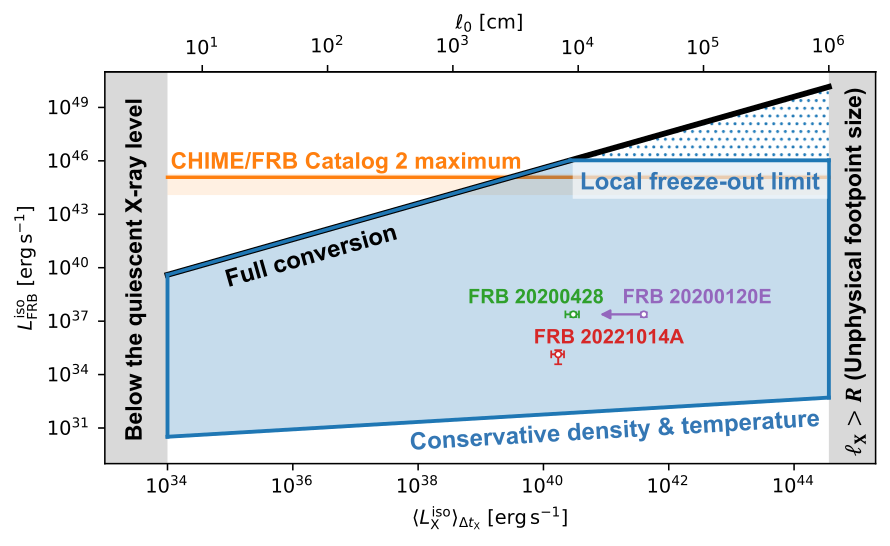
图注：下横轴为X射线暴各向同性等效光度，纵轴为FRB各向同性等效光度，上横轴为固定初温时对应的火球表面足点半径。蓝区由电子对密度与温度变化给出：下界为保守火球，上界为局域冻结密度并形式外推至无量纲温度1。更上方蓝点区需要超过该冻结密度，黑实线为全部X射线功率依次转为外流和射电真实光度的极端能量界。红、绿、紫点为有X射线对应或同时上限的FRB，紫色FRB 20200120E使用同时X射线上限；橙带由CHIME第二目录非重复暴亮端能量取代表持续时间换算。左灰区低于典型磁星持续X射线光度，右灰区在约10亿K固定初温下要求足点半径超过星体半径，均不在假设范围。
怎么看这张图：蓝色允许区域不是观测置信区间，亮端依赖额外装载、加热与稳速近似。能量允许也不保证产生和逃逸过程都能实现。
来源与置信度：arXiv HTML；source verified；https://arxiv.org/html/2609.36114v1/fireball_outflow_luminosity8.svg
8. Discovery of over a thousand variable stars in Terzan 5 and Liller 1 with JWST
- 来源：arXiv / astro-ph.HE
- 链接：https://arxiv.org/abs/2609.35959
- 作者：Kevin B. Burdge, Ilaria Caiazzo, Malina M. Desai, Cristina Pallanca, Vera L. Berger, Kaley Brauer, Matteo Correnti, Paul Draghis
- 公告 / 来源日期：2026-09-30
- 阅读层级：相关简报
- 评分：novelty 8/10，importance 8/10，relevance 7/10，final 8.65/10
- 推荐理由：JWST逐读差分发现1315变源并恢复已知轨道信号，时域方法和密集星团资源增量明确
中文题目：JWST拥挤场发现1315个变源：读出级测光连接红外与脉冲星轨道
问题、方法与结论：作者利用Terzan 5和Liller 1的NIRCam连续凝视，把无损读出组作差，获得约21.5秒采样，结合逐像素相邻时刻自相关寻找变源。两个视场共检出1315个变源，其中Liller 1为915个、Terzan 5为400个。对PSR J1748−2446A，盲搜得到约108分钟周期，随后与射电108.93分钟轨道及相位对应，支持其红外伴星识别。
意义与贡献：结果展示高消光、极拥挤场中寻找近距双星和紧致星伴星的新窗口。1315是视场内变源数，不能直接称为已确认星团成员；成员资格还需自行等信息，样本也偏向该时标和近红外可见的变化。
可借鉴之处：可借鉴保留校准斜坡中的读出信息、以自相关压低明亮恒星对搜索的干扰，再用跨波段与跨历元一致性排查邻星串扰。约2–3分钟的吸积闪烁会被常规215秒积分测光明显抹平，原始读出可以补回这段时间信息。
局限与关注点：相邻组差共享读出，误差并不独立；21.5秒间隔实际对应约32秒加权时间响应。绝对时间还留有至多10.7秒的探测器行读出偏移。周期搜索阈值是经验统计量，不能解释成同数值的高斯显著性；长于单次约7小时观测的周期、饱和修正及混光振幅都需额外核验。
图16
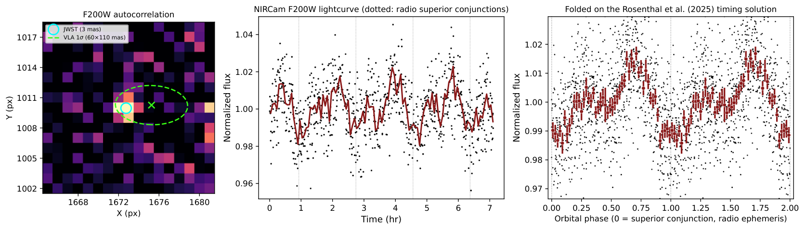
图注：PSR J1748−2446A的红外对应体。左为F200W自相关图，青圆是JWST质心，绿虚椭圆为VLA位置的1σ范围；中为原始时间序列，深红线是4分钟中位轮廓，竖虚线标出射电预报的脉冲星上合时刻；右按射电108.93分钟轨道折叠，相位零为上合，红点为50个相位箱均值及均值标准误。盲搜独立得到108.0分钟；近红外最低点接近上合，相位连接精度约0.003。作者将其识别为该星团首个明确光学或红外毫秒脉冲星伴星。
怎么看这张图：位置、周期、相位三项共同检验，比单纯位置重合更有力。混光会压低调制振幅，因此不能据此唯一拆分加热、双星内激波或椭球变化。
来源与置信度：arXiv HTML；source verified；https://arxiv.org/html/2609.35959v1/psrj1748_phase_fold.png
9. The Irreversible Depletion of Dark Matter Spikes by Extreme-Mass-Ratio Inspirals
- 来源：arXiv / astro-ph.HE
- 链接：https://arxiv.org/abs/2609.37234
- 作者：Charlie Sharpe, Yonadav Barry Ginat, Thomas F. M. Spieksma, Alexander Heger, Bence Kocsis
- 公告 / 来源日期：2026-09-30
- 阅读层级：相关简报
- 评分：novelty 8/10，importance 8/10，relevance 7/10，final 8.65/10
- 推荐理由：EMRI自身耗散暗物质尖峰削弱探针前景，长期反馈机制重要但族群与红移条件限制显著
中文题目：极端质量比旋近会清空暗物质尖峰：引力波探针自身改变环境
问题、方法与结论：研究把核星团的轨道平均Fokker–Planck演化与含后牛顿修正的三体散射连接起来，计算恒星级黑洞旋近时将暗物质粒子甩出的累积作用。在红移3、无碰撞尖峰模型中，中心黑洞质量不高于约10^5太阳质量时，每十亿年仅1–10次旋近就可显著耗尽内区；每十亿年100–300次时影响扩展至约10^6太阳质量，并大幅压低预计的引力波相位偏移。
意义与贡献：这提醒环境探测不能预设暗物质尖峰在整个宿主历史中静止不变。可观测目标应先经过长期存活检验，再讨论单次旋近信号；较早宇宙和较低旋近率可能保留更多尖峰，但还涉及探测距离和星团形成历史。
可借鉴之处：可借鉴按区域拆分动力学：损失锥外用弱散射输运给出进入通量，内区再以离散强遭遇计算存活概率。论文把旋近率保留为自由参数，并展示其与伴星质量的尺度关系，便于检验不同种群假设。
局限与关注点：所有伴星取10太阳质量，暗物质初始轨道采用热偏心率分布，早期旋近分布由最终态近似。逐轨道弹射独立性已被同期工作质疑；作者援引伴随论文模拟回应，本简报未独立裁决。无碰撞耗尽结论不能直接套用会重新填充的自相互作用暗物质；1弧度只是粗略相位判据，并非完整LISA探测显著性。
图4
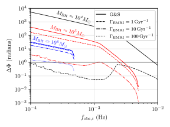
图注：五年观测中暗物质引起的引力波相位偏移，横轴为初始观测引力波频率。比较未耗尽的r的负7/3次方Gondolo–Silk尖峰和红移3的耗尽尖峰，旋近率取每十亿年1、10、100次。黑、红、蓝分别表示中心黑洞质量为一万、十万、一百万太阳质量。较深的水平线表示相位偏移1弧度这一近似LISA判据。
怎么看这张图：重点比较同一质量的未耗尽与耗尽情形。跨过1弧度并不自动代表可发现，实际还需要信噪比、波形系统误差和参数简并分析；耗尽强度本身亦有模型争议。
来源与置信度：arXiv HTML；source verified；https://arxiv.org/html/2609.37234v1/dephasing_plot_5_z_3.svg
10. Bayesian Evidence for Inspiraling Hotspot Motion in the Galactic Center
- 来源：arXiv / astro-ph.HE
- 链接：https://arxiv.org/abs/2609.35995
- 作者：Pablo Ruales, Maciek Wielgus, Delilah E.A. Gates, Alejandro Cardenas-Avendano
- 公告 / 来源日期：2026-09-30
- 阅读层级：相关简报
- 评分：novelty 7/10，importance 7/10，relevance 8/10，final 8.35/10
- 推荐理由：两圈Q-U轨迹比较径向内落与开普勒模型，有新运动学约束但依赖磁场和发射区参数化
中文题目：Sgr A*偏振环的两段内落模型：拟合改善尚不唯一确定轨迹
问题、方法与结论：论文重析2017年4月11日ALMA的229 GHz偏振数据，将Kerr时空中的热点运动推广为连续连接的两段径向和方位速度，并用慢光传播计算Q、U。主偏振环对轻微内落的证据仅为对数证据差约1.3；加入后续内环后，两段非开普勒模型比两段开普勒模型高约46，可多描述约0.7小时数据。条件后验显示内落速度从局域自由落体的约5%升至14%。
意义与贡献：贡献是用偏振形状与时间顺序检验运动学变化，而非只拟合一个闭合圆轨道。最优和中位轨迹都终止在最内稳定圆轨道之外，不能把拟合中的内落直接称为拍到热点穿越事件视界。
可借鉴之处：可借鉴在同一数据时间窗内比较模型证据，并同时报告后验轨迹族。相近的Q–U曲线可对应不同空间路径；拟合质量高并不意味着每个轨道点都被准确定位。误差随预测偏振强度变化时，似然归一化项也必须保留。
局限与关注点：自旋固定0.87、观察几何固定，模型不求解热点内部演化，整体偏振旋转也只能吸收静态外部法拉第效应。谱指数变化没有得到证据支持，但冷却、剪切和去偏振仍可能模拟环形变化；需同步多频或直接成像打破简并。两个不同时间窗的绝对证据不能相减来评价模型。
图2
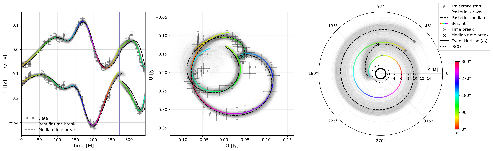
图注：两段非开普勒E2模型：左为Q、U时间序列及后验带，中为Q–U轨迹，右为赤道面热点路径，半径单位为几何质量M。灰色数据在观测时间约230 M内用圆点、之后用方块；三图彩线统一按热点方位角着色，黑虚线为后验中位重建。左侧紫实线和灰虚线分别标出最佳与中位转折时刻。浅灰为1000个后验样本。右图星号为起点，转折位置亦有标记；实圆和点圆分别为自旋0.87时的视界和最内稳定圆轨道。相近偏振曲线可对应明显不同空间轨迹。
怎么看这张图：中图拟合很紧，右图路径却分散，直接展示了逆问题的非唯一性。不要把彩色最佳路径当作逐点实测轨道。
来源与置信度：arXiv HTML；source verified；https://arxiv.org/html/2609.35995v1/full_posterior_combined_K2_nonkep_ga.png
11. JWST/MIRI Spectroscopy of the Quiescent Black Hole X-ray Binary XTE J1118+480: Constraints on Jet and Circumbinary Dust Contributions to the Mid-infrared Emission
- 来源：arXiv / astro-ph.HE
- 链接：https://arxiv.org/abs/2609.36318
- 作者：Zihao Zuo, Elena Gallo, Nuria Calvet, Richard M. Plotkin, David M. Russell, Gabriele Cugno, Rob Fender, Fraser Lewis
- 公告 / 来源日期：2026-09-30
- 阅读层级：相关简报
- 评分：novelty 7/10，importance 7/10，relevance 8/10，final 8.35/10
- 推荐理由：静默黑洞中红外弯曲光谱区分尘埃与喷流，非同时性与多区喷流仍允许竞争解释
中文题目：静默黑洞XTE J1118+480的中红外弯曲谱：尘埃优于稳态喷流的线索
问题、方法与结论：JWST/MIRI观测结合同时段光学监测扣除供体，得到5–12微米弯曲连续谱：764±9 K黑体比单幂律的拟合改善Δχ²约71，但自吸收同步辐射也能拟合该波段。较长波成像点高于谱外推约30%–90%，同时6 GHz射电未检出。作者给出受照环双星尘埃壁与外部尘埃的可行结构，内壁约在5.6倍双星间距。
意义与贡献：工作使极低吸积率黑洞的红外过量有了光谱形状约束，说明不能自动把这类过量归为紧致喷流。温暖尘埃是较有利解释，但曲率本身不具有唯一性，两个同步辐射区仍能容纳当前数据。
可借鉴之处：可借鉴用光学椭球调制在各观测相位分别标定供体，并以独立nod间散布修正谱误差。跨波段比较还需把成像帧间变化加入误差，25.5微米上限对区分模型尤为关键；供体扣除和同时性都可能比增加模型参数更重要。
局限与关注点：成像比光谱早约2.6小时，部分变化仅达边缘显著性；尘埃模型是人工探索的代表解，未完成严格联合拟合或模型证据比较。18微米凸起不足以确认特殊尘埃环，7.47微米谱线也仅边缘迹象。推得尘埃量仍不足以解释轨道快速衰减，除非现有质量被低估四至五个数量级；需要同时中红外光谱验证。
图3
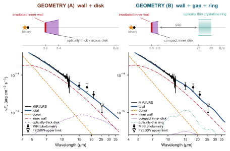
图注：XTE J1118+480的代表性受照环双星盘模型，下图纵轴为νFν、横轴为波长。上图在以双星间距a为单位的对数半径轴上画出对应几何，竖向比例夸大。左列为尘埃壁加连续紧致光厚盘；右列为尘埃壁、截断于0.08 AU的内盘、空隙及外部较冷光薄晶质尘埃环。总谱为粗蓝实线，供体为橙虚线，受照大颗粒内壁为红点划线，外部结构用相应颜色点线。黑实圆为未扣供体的成像通量，误差包含变化项；空心倒三角为F2550W的3σ上限，两模型均满足。
怎么看这张图：两种结构只展示物理可行性，并非严格拟合后的置信模型。长波凸起弱且观测不同时，不能由这张图认定尘埃环成分和半径已唯一测定。
来源与置信度：arXiv HTML；source verified；https://arxiv.org/html/2609.36318v1/xte_j1118_diad_geomAB.svg
12. Joint Mass-Radius and Magnetic-Geometry Inference of PSR J0740+6620
- 来源：arXiv / astro-ph.HE
- 链接：https://arxiv.org/abs/2609.37928
- 作者：Chun Huang, Tuomo Salmi, Alexander Y. Chen
- 公告 / 来源日期：2026-09-30
- 阅读层级：相关简报
- 评分：novelty 7/10，importance 7/10，relevance 8/10，final 8.35/10
- 推荐理由：物理磁场热点几何联推半径并暴露加热足迹缺口，证据只比较两个先验模型
中文题目：PSR J0740+6620磁场—热点联推：半径相容，极帽加热仍有缺口
问题、方法与结论：作者将无力磁层电流映射为表面温度，联合拟合NICER的相位—能量计数和XMM-Newton平均谱。在给定先验下，偏心偶极子比中心偶极加轴对称四极模型高出约5.65的对数证据，得到半径13.28 km、68%区间12.21–14.75 km。偏心模型两磁极加热归一化接近相同，却要求有效开放足迹面积约为同几何标称值的0.176。
意义与贡献：贡献是将“能拟合脉冲轮廓”进一步转化为对磁场与加热物理的检验。半径与既有现象学热点结果相容，质量则很大程度继承同一射电先验，不能把质量一致称为独立验证。小足迹暴露电流到X射线辐射的映射仍不完备。
可借鉴之处：可借鉴分别展示边缘后验、全局最佳点和符合独立观测条件的代表解。论文用于温度图展示的解受射电倾角区间筛选，不等于全局最大似然点；开放磁通截断系数也不严格等于非圆极帽的面积比。
局限与关注点：吸收柱和仪器归一化固定，未传播这些误差；氢大气、温度闭合及磁场先验也限制解释。偏心模型的视角后验与射电值相容，但未对所有模型施加同样的射电倾角先验重算证据。未解析回流电流片可改变加热分布，目前不能据小足迹唯一测出粒子转化高度或宣称已确定完整磁层。
图9
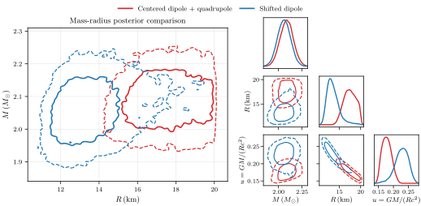
图注：两个主要磁场模型的恒星参数后验比较。左为质量—半径平面的68%实线和95%虚线最高后验密度轮廓；右为质量、半径和致密度的边缘分布。强制磁源居中会把推断推向更大半径、更低致密度。
怎么看这张图：同样的计数数据与质量先验，因表面几何不同而产生不同半径，展示了模型补偿效应。轮廓是各自假设下的后验，不是两个独立实验。
来源与置信度：arXiv HTML；source verified；https://arxiv.org/html/2609.37928v1/stellar_posterior_comparison.svg
13. Fooled by mass? Recovering the $Γ-λ_{Edd}$ relation of quasars from their X-ray variability
- 来源：arXiv / astro-ph.HE
- 链接：https://arxiv.org/abs/2609.37607
- 作者：Matilde Signorini, Andrea Sacchi, Bartolomeo Trefoloni, Matteo Guainazzi, Elisabeta Lusso, Emanuele Nardini, Chiara Niccolai, Federica Ricci
- 公告 / 来源日期：2026-09-30
- 阅读层级：相关简报
- 评分：novelty 7/10，importance 7/10，relevance 8/10，final 8.35/10
- 推荐理由：类星体同源多历元去除质量回归稀释，方法可迁移但吸积率换算仍有假设
中文题目：类星体越亮越软：逐源变动绕开黑洞质量误差
问题、方法与结论：研究交叉匹配SDSS与4XMM，清理出7835个蓝色宽线类星体。跨源回归的X射线光子指数—爱丁顿比斜率随质量指标而变；作者转而分析893个多历元变源，让同一黑洞的质量只进入截距。汇总逐源后验得到光子指数对2 keV单色光度对数的斜率约0.35±0.03，高精度子样本约0.43，支持统计上的越亮越软。
意义与贡献：贡献是把同一源随时间的响应与不同源之间的相关性分开。约0.4 dex的单历元质量系统误差可能显著稀释横轴变化，但不能据此认定质量误差是所有源间差异的唯一成因；冕几何、加热和光深仍会改变谱。
可借鉴之处：可借鉴先拟合各源再汇总完整后验，避免把不同截距的轨迹合成一条回归线。附录实际在斜率角的空间做种群建模，再转换回斜率；少历元对象依赖先验，不能简单把各源最佳斜率平均或把汇总显著性分配给每个源。
局限与关注点：多数对象仅两三个历元，采样基线从天到十余年，谱指数来自宽波段测光。转换到爱丁顿比还假定种群的X射线—紫外及总光度关系适用于单源变化，合理斜率范围可宽至约0.14–0.26。样本不包含典型强遮蔽或射电强源，也不能把这条浅关系远距离外推来排除所有超爱丁顿解释。
图5
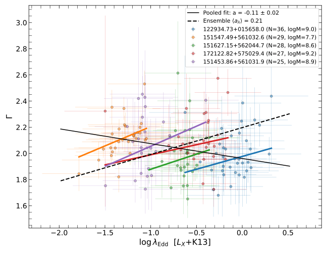
图注：观测历元最多的五个类星体的光子指数与爱丁顿比对数关系，各源用不同颜色。爱丁顿比采用2 keV单色光度加K13修正及各自单历元质量。彩线是逐源关系，黑线是把所有点合并后的单次拟合，虚线给出种群汇总斜率；逐源正趋势在合并后可被抹平甚至反号。
怎么看这张图：先沿一种颜色看随时间的趋势，再看跨颜色的截距偏移。此图说明组内和组间关系不可混用，但质量误差与其他源间物理差异仍需分辨。
来源与置信度：arXiv HTML；source verified；https://arxiv.org/html/2609.37607v1/pseudo_edd_top5.svg
14. First-star imprints in a metal-poor galaxy overdensity near the end of reionization
- 来源：Nature Astronomy
- 链接：https://www.nature.com/articles/s41550-026-02993-5
- 作者：Zihao Li, Koki Kakiichi, Lise Christensen, Zheng Cai, Valentina D’Odorico, Jorryt Matthee, Daichi Kashino, Rongmon Bordoloi
- 公告 / 来源日期：2026-09-29
- 阅读层级：相关简报
- 评分：novelty 8/10，importance 8/10，relevance 7/10，final 8.65/10
- 推荐理由：再电离末期贫金属过密区提供第一代恒星化学遗迹检验，尚不能把候选指纹视为确定发现
中文题目：早期星系过密区的第一代恒星化学遗产：间接证据及模型依赖
问题、方法与结论：Nature Astronomy于9月29日发表的研究，将红移5.945吸收系统的碳、氧、硅丰度与附近17个星系联系起来。JWST光谱叠加推得星系群平均金属丰度约太阳的3%，比类似过密区低约0.4 dex；偏高的碳氧、硅氧比可由第一代恒星与后续恒星共同富集解释。在采用的产额混合模型下，作者估计至少约30%的金属来自第一代恒星。
意义与贡献：工作把星际吸收的元素指纹与周围星系环境结合，为早期化学富集提供了空间背景。这是第一代恒星遗产的间接诊断，既没有直接成像第一代恒星，也没有唯一识别某一种超新星祖先质量。
可借鉴之处：可借鉴对同红移星系作归一化光谱叠加，并把丰度比、整体金属丰度和宿主环境分别作为检验条件。此次阅读使用与期刊题名及作者相符的arXiv第二版作者稿，原期刊正文未能直接取得，图与方法证据均来自该版本。
局限与关注点：氧丰度诊断缺少[O II]，采用低金属丰度分支；吸收体中性氢柱密度未直接测量，电离修正依赖间接估计。晕占据模型误差很宽，最近已检出星系也未必就是真正宿主。早期小晕富集后合并和晚时原始气体形成恒星等历史仍可相容，不能把条件金属占比解释成已测定的恒星形成比例。
图2
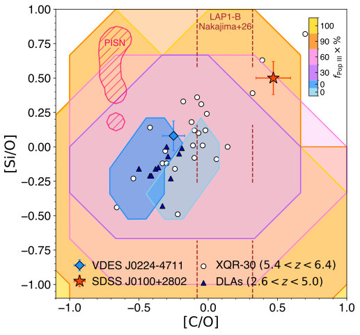
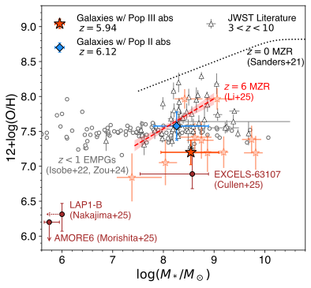
图注：（a）吸收体的[C/O]和[Si/O]与第一代恒星混合富集模型比较。阴影颜色表示模型中第一代恒星核心坍缩超新星的富集份额；深、浅蓝是两个文献给出的纯第二代恒星模型，红色斜线为第一代恒星对不稳定超新星模型。空心圆为XQR-30吸收体，空心三角为较低红移贫金属阻尼Lyα系统，棕虚线为LAP1-B碳氧比的1σ区间。（b）质量—金属丰度关系：红星为过密区成员叠加结果，空星为Hβ信噪比大于3的单源，蓝菱形为与第二代恒星吸收体相关的VDESJ0224-4711过密区；黑三角为文献JWST测量，棕色突出三颗极贫金属星系，灰圆为低红移对照。LAP1-B质量上限约2700太阳质量，为显示清楚在横轴向较大值移位。原图注称红星为中位叠加，方法节描述为均值叠加，二者用语不一致。
怎么看这张图：两个面板分别约束元素比例和环境金属丰度。落入混合模型区域是条件相容性，不是直接看到第一代恒星；尤其不能把显示移位后的LAP1-B横坐标当测量值。
来源与置信度：arXiv HTML；source verified；https://arxiv.org/html/2606.31638v2/SIO-CO_popiii.svg；https://arxiv.org/html/2606.31638v2/PopIII_Z.svg
说明
评分由 LLM 给出初评，再由本地阈值策略过滤；IACT、TeV 伽马射线和高能中微子天文学按重点方向处理。